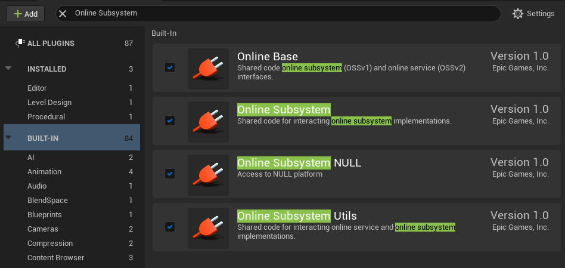
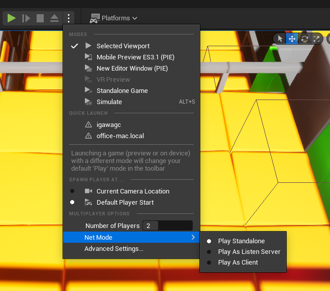
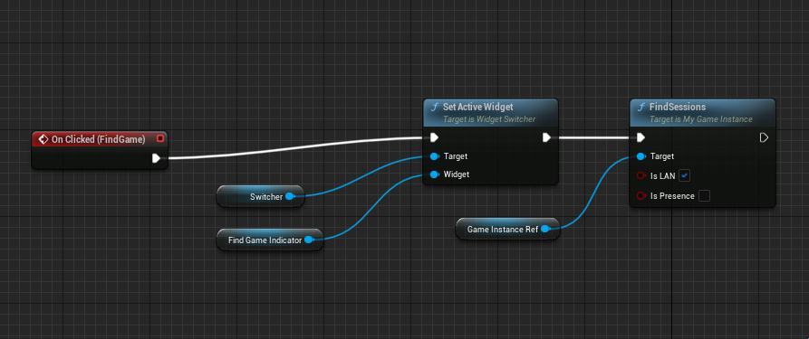
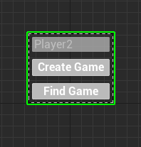
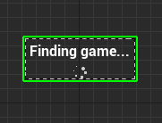
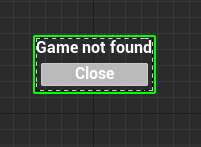
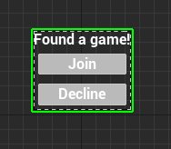
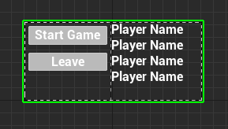
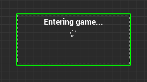
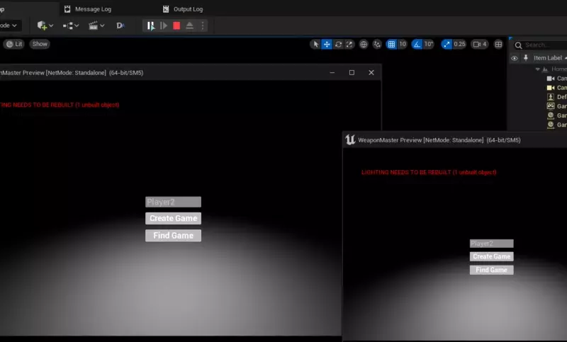

Introduction
Feature design
In this article we will build a host game/join game mechanic. Player are allowed to 'host' a game. After that people joining games and start playing. There are 4 operations we will be implementing here
- Host Game -
Create Sessionin UE term - List Opening Game -
Find Sessionsin UE term - Join Game -
Join Sessionin UE term - Leave Game -
Destroy Sessionin UE term - Start Game - After all player are gathered, host player can decide to start the game
Before we begin
Make sure you enabled online subsystem plugin
Open Plugin Settings, and enable Online Base, Online Subsystem, Online Subsystem Utils. Then enable Steam, or something else according to your case. In this case, I just want to connect over LAN so I went with Online Subsystem NULL
Your setting would looks like this 
Set PIE player count to at least 2
We need at least 2 players to test this kind of behavior. By default it's 1, so adjust number of players accordingly. Their Net Mode have to be Standalone
Your setting would looks like this 
Core functions
Create session
You can check for Epic's official implementation of CreateSession at Engine\Plugins\Online\OnlineSubsystemUtils\Source\OnlineSubsystemUtils\Private\CreateSessionCallbackProxy.cpp
First we need to declare some Delegate
// MyGameInstance.h
FOnCreateSessionCompleteDelegate OnCreateSessionCompleteDelegate;
FOnStartSessionCompleteDelegate OnStartSessionCompleteDelegate;
FDelegateHandle OnCreateSessionCompleteDelegateHandle;
FDelegateHandle OnStartSessionCompleteDelegateHandle;
Setup delegate in your class constructor
// MyGameInstance.cpp/Init method
OnCreateSessionCompleteDelegate =
FOnCreateSessionCompleteDelegate::CreateUObject(
this, &UMyGameInstance::OnCreateSessionComplete);
OnStartSessionCompleteDelegate =
FOnStartSessionCompleteDelegate::CreateUObject(
this, &UMyGameInstance::OnStartSessionComplete);
The actual create method would looks like this.
We need an IOnlineSession object to get going, usually you can get it with Online::GetSubsystem::GetSessionInterface.
In there we pass a player ID, that player would be host player, in this case I use GetPrimaryPlayerUniqueIdRepl.
Customization is done via FOnlineSessionSettings.
Note that those settings are pretty fragile, your game might not be found by others if not done correctly.
The options below are confirmed working in UE 5.0 for creating a LAN game.
bool UMyGameInstance::CreateSession() {
FOnlineSessionSettings Settings;
Settings.NumPublicConnections = 10;
Settings.bShouldAdvertise = true;
Settings.bAllowJoinInProgress = true;
Settings.bIsLANMatch = true;
Settings.bUsesPresence = true;
Settings.bAllowJoinViaPresence = true;
auto Sessions = Online::GetSubsystem(GetWorld())
->GetSessionInterface();
OnCreateSessionCompleteDelegateHandle =
Sessions->AddOnCreateSessionCompleteDelegate_Handle(
OnCreateSessionCompleteDelegate);
return Sessions->CreateSession(
*GetPrimaryPlayerUniqueIdRepl(), NAME_GameSession, Settings);
}
void UMyGameInstance::OnCreateSessionComplete(
FName SessionName, bool bWasSuccessful) {
auto Sessions = Online::GetSubsystem(GetWorld())
->GetSessionInterface();
// Clear the SessionComplete delegate handle, since we finished this call
Sessions->ClearOnCreateSessionCompleteDelegate_Handle(
OnCreateSessionCompleteDelegateHandle);
if (!bWasSuccessful) {
return;
}
// Set the StartSession delegate handle
OnStartSessionCompleteDelegateHandle =
Sessions->AddOnStartSessionCompleteDelegate_Handle(
OnStartSessionCompleteDelegate);
Sessions->StartSession(NAME_GameSession);
}
void UMyGameInstance::OnStartSessionComplete(
FName SessionName, bool bWasSuccessful) {
auto Sessions = Online::GetSubsystem(GetWorld())
->GetSessionInterface();
// Clear the delegate, since we are done with this call
Sessions->ClearOnStartSessionCompleteDelegate_Handle(
OnStartSessionCompleteDelegateHandle);
if (!bWasSuccessful) {
return;
}
// Assume that lobby map are named "Lobby"
UGameplayStatics::OpenLevel(GetWorld(), "Lobby", true, "listen");
}
Find session
Official implementation of FindSessions is at Engine\Plugins\Online\OnlineSubsystemUtils\Source\OnlineSubsystemUtils\Private\FindSessionsCallbackProxy.cpp
Result will be populated to SessionSearch
// Declare this somewhere in your class property, we will need this in other methods
TSharedRef<FOnlineSessionSearch> SessionSearch;
FOnFindSessionsCompleteDelegate OnFindSessionsCompleteDelegate;
FDelegateHandle OnFindSessionsCompleteDelegateHandle;
// MyGameInstance.cpp/Init method
OnFindSessionsCompleteDelegate =
FOnFindSessionsCompleteDelegate::CreateUObject(
this, &UMyGameInstance::OnFindSessionsComplete);
// Find method
void UMyGameInstance::FindSessions() {
SessionSearch->bIsLanQuery = true;
SessionSearch->MaxSearchResults = 20;
SessionSearch->PingBucketSize = 1000;
auto Sessions = Online::GetSubsystem(GetWorld())->GetSessionInterface();
OnFindSessionsCompleteDelegateHandle =
Sessions->AddOnFindSessionsCompleteDelegate_Handle(
OnFindSessionsCompleteDelegate);
Sessions->FindSessions(*GetPrimaryPlayerUniqueIdRepl(), SessionSearch);
}
We use a TSharedRef but not a TSharedPtr because shared reference guaranteed object to not be null, while shared pointer don't have that property.
void UMyGameInstance::OnFindSessionsComplete(bool bWasSuccessful) {
auto Sessions = Online::GetSubsystem(GetWorld())->GetSessionInterface();
// Clear the Delegate handle, since we finished this call
Sessions->ClearOnFindSessionsCompleteDelegate_Handle(
OnFindSessionsCompleteDelegateHandle);
// Additionally, you might want to send the list to Blueprint
TArray<FString> Names;
for (auto result : SessionSearch->SearchResults) {
Names.Add(result.Session.OwningUserName);
}
// UpdateSessionList is a blueprint event, implemented by adding those in your header file
// MyGameInstance.h
// UFUNCTION(BlueprintImplementableEvent, DisplayName = UpdateSessionList)
// void UpdateSessionList(const TArray<FString>& Results);
UpdateSessionList(Names);
}
Join session
Official implementation of JoinSession is at Engine\Plugins\Online\OnlineSubsystemUtils\Source\OnlineSubsystemUtils\Private\JoinSessionCallbackProxy.cpp
// MyGameInstance.h
TSharedRef<FOnlineSessionSearch> SessionSearch;
FOnJoinSessionCompleteDelegate OnJoinSessionCompleteDelegate;
FDelegateHandle OnJoinSessionCompleteDelegateHandle;
// MyGameInstance.cpp/Init method
OnJoinSessionCompleteDelegate = FOnJoinSessionCompleteDelegate::CreateUObject(
this, &UMyGameInstance::OnJoinSessionComplete);
bool UMyGameInstance::JoinSession() {
// Suppose that we want to join the first game we found
if(SessionSearch->SearchResults.IsEmpty()) {
return false;
}
FOnlineSessionSearchResult SearchResult = SessionSearch->SearchResults[0];
auto Sessions = Online::GetSubsystem(GetWorld())->GetSessionInterface();
OnJoinSessionCompleteDelegateHandle =
Sessions->AddOnJoinSessionCompleteDelegate_Handle(
OnJoinSessionCompleteDelegate);
Sessions->JoinSession(*GetPrimaryPlayerUniqueIdRepl(), NAME_GameSession, SearchResult);
}
void UMyGameInstance::OnJoinSessionComplete(
FName SessionName, EOnJoinSessionCompleteResult::Type Result) {
auto Sessions = Online::GetSubsystem(GetWorld())->GetSessionInterface();
// Clear the Delegate again
Sessions->ClearOnJoinSessionCompleteDelegate_Handle(
OnJoinSessionCompleteDelegateHandle);
const auto PlayerController = GetFirstLocalPlayerController();
// We need a FString to use ClientTravel and we can let the
// SessionInterface contruct such a String for us by giving him the
// SessionName and an empty String. We want to do this, because Every
// OnlineSubsystem uses different TravelURLs
FString TravelURL;
if (!PlayerController ||
!Sessions->GetResolvedConnectString(SessionName, TravelURL)) {
return;
}
PlayerController->ClientTravel(TravelURL, ETravelType::TRAVEL_Absolute);
}
In this example, for the sake of simplicity I let player join the first game in the result. In real project, you might probably want have an GUI for player to pick a game to join.
Destroy session
Official implementation of DestroySession is at Engine\Plugins\Online\OnlineSubsystemUtils\Source\OnlineSubsystemUtils\Private\DestroySessionCallbackProxy.cpp
// MyGameInstance.h
FOnDestroySessionCompleteDelegate OnDestroySessionCompleteDelegate;
FDelegateHandle OnDestroySessionCompleteDelegateHandle;
// MyGameInstance.cpp/Init method
OnDestroySessionCompleteDelegate =
FOnDestroySessionCompleteDelegate::CreateUObject(
this, &UMyGameInstance::OnDestroySessionComplete);
void UMyGameInstance::LeaveSession() {
auto Sessions = Online::GetSubsystem(GetWorld())->GetSessionInterface();
Sessions->AddOnDestroySessionCompleteDelegate_Handle(
OnDestroySessionCompleteDelegate);
Sessions->DestroySession(NAME_GameSession);
// Suppose your main menu map is named "Home"
UGameplayStatics::OpenLevel(GetWorld(), "Home", true);
}
void UMyGameInstance::OnDestroySessionComplete(
FName SessionName, bool bWasSuccessful) {
auto Sessions = Online::GetSubsystem(GetWorld())->GetSessionInterface();
// Clear the Delegate
Sessions->ClearOnDestroySessionCompleteDelegate_Handle(
OnDestroySessionCompleteDelegateHandle);
if (!bWasSuccessful) {
return;
}
// Suppose your main menu map is named "Home"
UGameplayStatics::OpenLevel(GetWorld(), "Home", true);
}
Start game
Start a game is quite simple. We travel to the action map, host player call the travel function, all connected client will follow.
void UMyGameInstance::StartGame() {
// Only lobby host can start game
if (!GetFirstLocalPlayerController()->HasAuthority()) {
return;
}
GetWorld()->ServerTravel("/Game/Maps/LegoDungeon");
}
Expose functionality to Blueprint
C++ is awesome I know, but compiling code is a pain, no joke. Lucky for us, there have Blueprint come to the rescue. Changes in Blueprint are reflected almost instantly.
First you can define which C++ method support Blueprint by adding UFUNCTION(BlueprintCallable)on their head. Like this
UFUNCTION(BlueprintCallable)
bool CreateSession(const FString HostPlayerName, bool bIsLAN,
bool bIsPresence, const int32 MaxNumPlayers);
Then in Blueprint you can do this.

The same apply for
UFUNCTION(BlueprintCallable, DisplayName = FindSessions)
void FindSessions(bool bIsLAN, bool bIsPresence);
The code above allow us to do this in Blueprint

Build an user interface
We have all the pieces, now let's glue them all together with an UI.
Main menu
Create game

Find game
 
Join game

Lobby
Lobby

Start game

And that's the final result when it all connected together

Conclusions
Here are complete working C++ code, please check this MyGameInstance.cpp and MyGameInstance.h
Learn more
- Multiplayer tutorial, if you have some time to spare, definitely check this out
- Official documentation